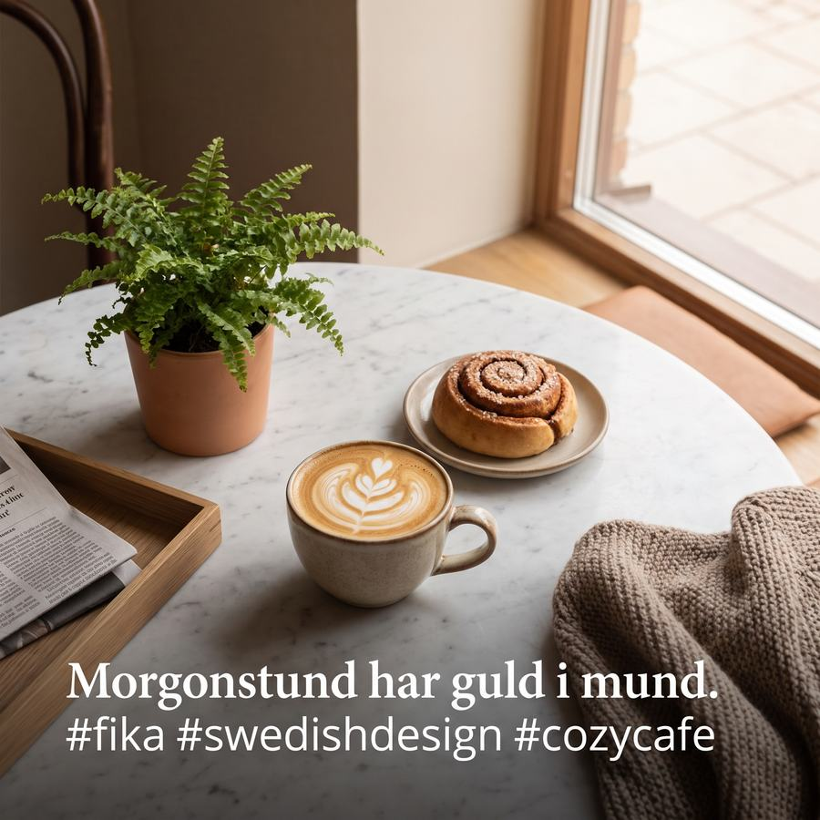
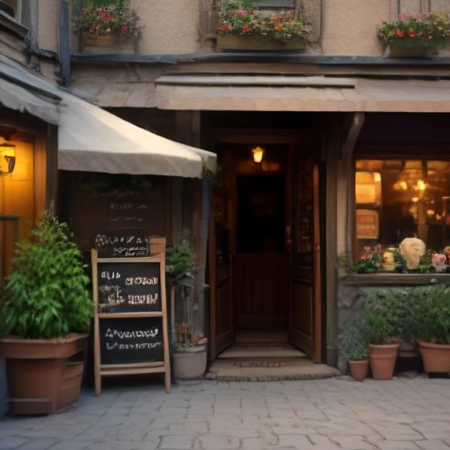

Nyhet på menyn
Nybakat i morse, slut före lunch. Den nya kanelbullen med kardemumma och havssalt bakas i ett begränsat antal varje dag, så kom gärna tidigt. Vilken är din vanliga beställning här?
Reel, 30–45 sekExempelcase
Ett café med full lokal och tomt flöde. Så här ser en månads innehåll ut när någon annan sköter det.
Företaget, inläggen och eventuella omdömen på den här sidan är påhittade, för att visa hur ett upplägg kan se ut.
Så här kan ett upplägg se ut och vad vi skulle mäta.
Tänkt utgångsläge: Ett mysigt café utan tid att posta regelbundet, och inget gemensamt visuellt uttryck mellan inläggen.
Så lägger vi upp det: En enkel visuell linje och en veckovis rytm med bilder på fika, stämning och erbjudanden — färdigt att godkänna, aldrig mer än ett par minuters jobb för caféet själva.
Det här följer vi upp: Räckvidd och engagemang per inlägg, samt vilka teman (fika, personal, erbjudanden) som får mest respons över tid.


Texterna nedan är innehållet som skulle publiceras, ord för ord. Formatet under varje inlägg är inte en detalj — det avgör hur många som ser inlägget.
Nybakat i morse, slut före lunch. Den nya kanelbullen med kardemumma och havssalt bakas i ett begränsat antal varje dag, så kom gärna tidigt. Vilken är din vanliga beställning här?
Reel, 30–45 sekKlockan 05:30 är degen redo. Klockan 07:00 öppnar vi dörrarna. Däremellan händer allt det ni aldrig ser: ugnar som värms, bord som torkas, första kannan som bryggs. Hur ser er morgon ut vid halv sex?
Reel, 40–55 sekDet finns något med en varm kopp kaffe och ett bord vid fönstret en regnig eftermiddag. Vi har hållit platsen varm åt dig, och hyllan med låneböcker står kvar där den alltid stått. Vilket bord är ditt?
Karusell, 4 bilderHösten är här och menyn följer med: pumpasoppa, kanel och varma drycker sträckta över långa eftermiddagar. Vi byter menyn efter säsong, inte efter kalender. Vad är din höstfavorit?
Karusell, 5 bilderVårt kaffe rostas tio minuter härifrån och brödet bakas här inne varje morgon. Att hålla det lokalt är inte en trend för oss, det är så vi alltid gjort. Vet du var ditt kaffe kommer ifrån?
Reel, 35–50 sekFacebook & nyhetsbrev
Går du förbi Solrosgatan i helgen? Vi har förlängt öppettiderna till klockan 16 på lördagar och bjuder på en extra kanelbulle till alla som nämner det här inlägget i disken. Ta med familjen, ta med en bok, ta med någon du inte träffat på ett tag. Vi håller fikat varmt. Vem tar du med dig?
Karusell · samma bilder som InstagramHej och välkommen till månadens brev från Café Solros.
Sensommaren har varit lugn och full av folk på samma gång, och vi vill börja med att tacka alla er som stannat till för en kopp kaffe, ett samtal eller bara en stunds tystnad i vår hylla med låneböcker. Nu går vi in i hösten med ett par nyheter vi tror att ni kommer uppskatta.
Först och främst: vår kanelbulle med kardemumma och havssalt är nu ordinarie på menyn efter provperioden. Vi bakar ett begränsat antal varje morgon, så kom gärna innan lunch om du vill säkra en.
Vi har också uppdaterat höstmenyn med varma soppor, en ny pumpalatte och återkommande favoriter som chokladkaka med havssalt. Allt bakas och lagas i vårt eget kök varje dag, med råvaror från lokala leverantörer när det går.
Från och med nästa vecka förlängs öppettiderna på lördagar till klockan 16:00, bra om du vill unna dig en lång frukost eller ta ett möte över en kopp kaffe. Vi planerar också ett mindre höstmingel i början av oktober för stamgäster. Håll utkik efter en inbjudan i nästa brev.
Till sist: tack för att ni fortsätter välja Solros. Ett litet café lever på sina stamgäster, och det är ni som gör varje dag här rolig.
Hälsningar,
Teamet på Café Solros
Boka ett första, förutsättningslöst samtal om vad vi kan göra för ert företag.